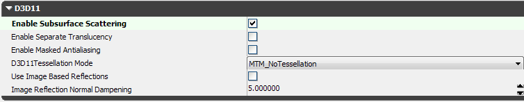
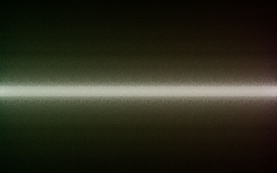

UDN
Search public documentation:
ScreenSpaceSubsurfaceScatteringCH
English Translation
日本語訳
한국어
Interested in the Unreal Engine?
Visit the Unreal Technology site.
Looking for jobs and company info?
Check out the Epic games site.
Questions about support via UDN?
Contact the UDN Staff
日本語訳
한국어
Interested in the Unreal Engine?
Visit the Unreal Technology site.
Looking for jobs and company info?
Check out the Epic games site.
Questions about support via UDN?
Contact the UDN Staff
屏幕空间次表面散射
概述

启用SSS
SSS材质参数

另外，您需要提供SubsurfaceInscatteringColor、SubsurfaceAbsorptionColor和SubsurfaceScatteringRadius材质参数的值：
SubsurfaceInscatteringColor(次表面内散射颜色)
内散射颜色是用于在光线入射到物体处调制该光线的颜色。这对于控制次表面散射的总量和颜色是有用的。 内散射颜色由绿变红的示例：
SubsurfaceAbsorptionColor(次表面吸收色)
吸收颜色是光线已经到达散射半径后仍然保留的颜色。从入射点到散射半径处，光线颜色按照指数型衰减由白色变为吸收色。 和内散射颜色不同，吸收色在光线射出物体处进行计算。 吸收色由绿变红的示例：
SubsurfaceScatteringRadius(次表面散射半径)
散射半径定义了光线在完全被吸收前可以穿越物体的最大距离，按世界单位计算。 和吸收色一样，它是在光线射出物体的地方进行计算。 在水平方向变化的散射半径的示例：
内容示例
以下图片是创建角色皮肤材质所使用的次表面散射的基本示例。您将注意到有一个漫反射贴图，它用于phong漫反射且该漫发射贴图经过颜色调制，以便创建内散射颜色。有一个独立的贴图用于吸收颜色。创建漂亮的皮肤效果的技巧是平衡phong和次表面的光照分布多少。太多的次表面效果将会产生闪光的或胶状物的外观效果，而太多的phong光照将会导致角色呈现出过于干枯、锐化的外观效果。